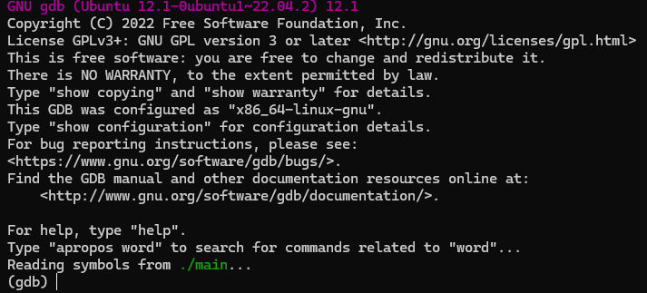
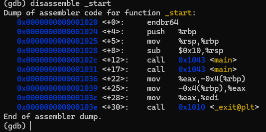
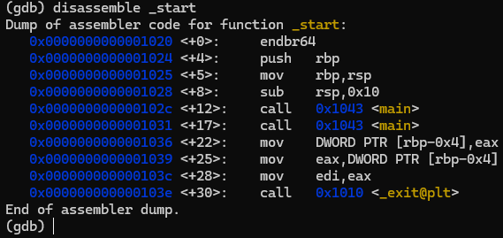
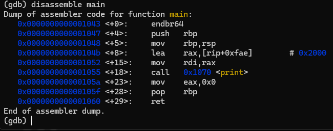

Primo Programma: Hello World!
Il nostro obiettivo è stampare la scritta "Hello World!" sullo schermo.
Per farlo, usiamo un header chiamato stdio.h (dove "stdio" sta per "standard input/output").
Un header è un file che contiene una serie di definizioni utili per il nostro codice, evitandoci di riscriverle da zero.
Prima di cominciare, è importante sapere che ogni programma C comincierà ad eserguire il codice dalla funzione main(), che non è altro che il punto di ingresso del nostro programma.
// .. il codice cominciera' ad essere eseguito da qui
return 0; // .. il main deve avere sempre questa istruzione finale, rappresenta la fine del programma
}
Inoltre, molto spesso vedrete all'interno dei programmi questo simbolo: "//"; In C significa che tutto quello che viene a destra di questo simbolo è un commento, cioè degli appunti del programmatore che non verranno eseguiti dalla macchina.
Fatte queste premesse passiamo pure al programma che stampa a schermo la scritta "Hello World!":
int main(){
printf("Hello World!");
return 0;
}
Compilazione del Programma
Da command line, naviga nella directory corrente e digita il seguente comando:
Analizziamo il comando:
- gcc: Sta per "GNU Compiler Collection". È una suite di compilatori che supporta vari linguaggi. Trasforma il codice sorgente in codice macchina.
- ./sorgente.c: Il file sorgente C che abbiamo scritto.
- -o: Indica che il prossimo argomento sarà il nome dell'eseguibile.
- ./sorgente: Il nome dell'eseguibile generato dal codice sorgente.
Oltre a questi parametri, puoi aggiungerne altri per fornire più informazioni al compilatore, come:
- -W: Abilita alcuni avvisi base del compilatore.
- -Wall: Sta per "Warn All" e attiva molti avvertimenti utili.
- -Wextra: Aggiunge avvisi extra rispetto a
-Wall. - -std=c99: Indica di utilizzare lo standard C del 1999.
- -O0: "O" sta per "ottimizzazione", e il numero indica il livello (arriva fino a 3).
Quelli che vi ho mostrato erano solo alcuni dei flag, per avere un quadro più completo puoi andare alla seguente pagina
Un altro esempio di compilazione potrebbe essere:
Analisi del Codice Sorgente del programma sorgente.c
Nel codice sorgente, la prima riga include l'header #include <stdio.h>, che ci consente di usare la funzione printf().
La funzione printf() stampa una stringa sullo schermo. È una funzione di "formattazione della stampa", che ci consente di inserire variabili all'interno della stringa usando dei segnaposto.
Esempio di printf() con i segnaposto
int main(){
printf("valore: %i", 15); // Stampa un intero
printf("valore: %c", 'b'); // Stampa un carattere
printf("valore: %s", "Ciao mondo"); // Stampa una stringa
return 0;
}
i doppi apici invece vanno usati per i vettori di caratteri.
Ogni segnaposto corrisponde a un tipo di dato specifico.
| Segnaposto | Descrizione |
|---|---|
| %d o %i | Intero in formato decimale. |
| %u | Intero senza segno in formato decimale. |
| %f | Numero a virgola mobile in formato decimale. |
| %c | Singolo carattere. |
| %s | Stringa di caratteri. |
| %p | Indirizzo di memoria (puntatore). |
| %ld, %lld | Stampa un intero lungo (long) o lungo lungo (long long). |
| %x o %X | Stampa un intero in formato esadecimale (rispettivamente minuscolo o maiuscolo). |
| %o | Stampa un intero in formato ottale. |
| %lf | Stampa un numero a virgola mobile di doppia precisione (double). |
| %lu, %llu | Stampa un intero lungo (long) o lungo lungo (long long) senza segno. |
| %e o %E | Stampa un numero a virgola mobile in notazione esponenziale (rispettivamente con 'e' minuscola o 'E' maiuscola). |
| %g o %G | Stampa un numero a virgola mobile in formato più compatto, utilizzando %f o %e/%E a seconda di quale sia più breve. |
Curiosità (programmazione avanzata)
Tornando al programma sorgente.c, abbiamo l'istruzione "int main(){//qualcosa}".Questa funzione è la seconda funzione da dove il programma eseguibile comincerà ad eseguire il codice.
Come fa l'eseguibile ad entrare nella funzione main()? Il compilatore in automatico aggiunge una procedura chiamata _start,
che avrà il compito di fare una chiamata alla funzione main().
Questo comportamento, possiamo replicarlo manualmente in C, nel seguente modo:
extern void _exit(register int);
extern void print(const char*);
int main(void);
void _start(){
int result = main();
main();
_exit(result);
}
int main(){
print("Hello World");
return 0;
}
Dobbiamo costruirci quindi per conto nostro le funzioni che scrivono in standard output in assembly.
Quindi dobbiamo creare un'altro file chiamato "print.asm" e al suo interno ci scriviamo le seguenti righe di codice:
global print
; void print(const char*)
print: push rbp ; il parametro passato alla print si trova dentro al registro rdi
mov rbp, rsp
mov rsi, rdi; assegno l'indirizzo che punta al vettore di rdi a rsi
.put: cmp byte[rsi], 0; stampa a schermo finchè non raggiunge il carattere '\0'
je .done
mov rax, 1; codice chiamata di sistema per la sys-write
mov rdx, 1; quanti caratteri stampare alla volta
mov rdi, 1; file descriptor per stdio (e' 1)
syscall; stampo a schermo il singolo carattere
inc rsi; passo al prossimo carattere
jmp .put
.done: leave; libero lo stack
ret; esco dalla funzione print (equivale alla return;)
Questo programma può essere compilato solo da un os Linux-Like (i compilatori dipendono dal os che si usa), quindi su ambienti come windows questo programma potrebbe dare errore.
Da Cli scriviamo i seguenti comandi:
$ gcc main.c print.o -o main -nostartfiles
Quando siamo all'interno della funzione main() bisogna restituire alla chiamata un valore
intero per comunicare l'andamento del programma (0 tutto bene, diverso da 0 se è andato male).
Una volta restituito il valore alla variabile che abbiamo chiamato result, si deve passare quel valore alla
procedura _exit, che viene restituito al processo padre.
L'output di questo programma sarà:
Hello WorldHello World
Inoltre, è possibile visualizzare il contenuto della procedura _start() prodotto dal compilatore usando il debugger gdb, che per installarlo da linux basta usare il gestore dei pacchetti apt:

Per visualizzare il contenuto di funzioni, procedure o di etichette all'interno dell'eseguibile, ci basta usare il comando "disassemble" + il nome.
Il nostro obiettivo è di visualizzare la procedura _start, quindi nel debugger ci basterà scrivere "disassemble _start":

Di default, il debugger gdb mostra la sintassi dell'assembly AT&T e per cambiarla basta scrivere:
"set disassembly-flavor intel"
In questo modo ci verrà consentito di leggere il codice con la sintassi del native assembly (nasm):

Come possiamo vedere all'interno di questa procedura abbiamo 2 chiamate alla funzione main (all'indirizzo 0x1043).
Per avere un ulteriore conferma che effettivamente è la nostra funzione main ci basterà scrivere nella cli "disassemble main":

Questa è una dimostrazione pratica che in realtà il main è la seconda funzione che viene eseguita.
Ci tengo a precisare che normalmente non si deve mai personalizzare la procedura _start, tranne in alcuni casi come lo sviluppo dei kernel.